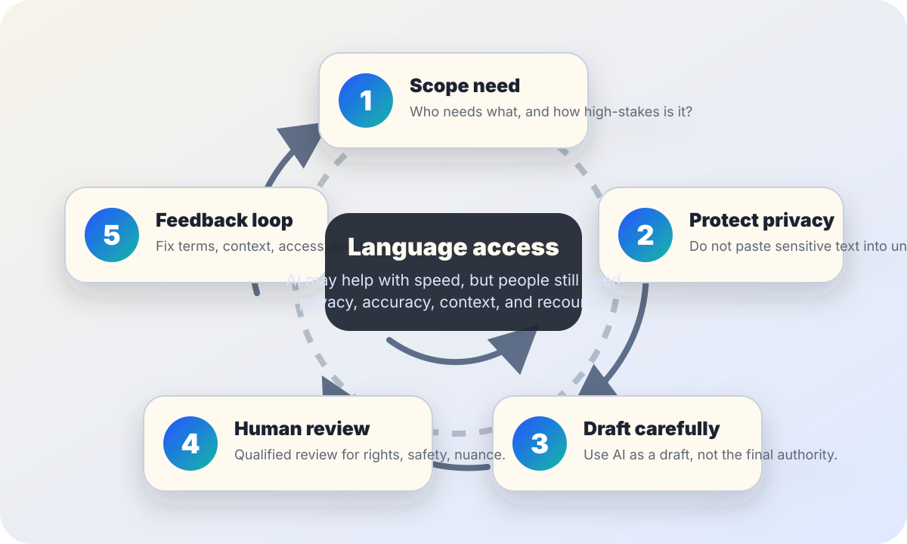

AI literacy
AI translation and language access.
Use this when a school, workplace, clinic, public office, newsroom, or community group wants faster translation without treating machine output as equal to qualified language support.
The short answer
AI translation can help people understand the rough meaning of low-risk text, prepare drafts, and notice where human language support is needed. But AI translation should not silently replace qualified human review when rights, health, safety, money, legal status, education outcomes, or public services are at stake.
Language access is not only word conversion. It also includes privacy, cultural context, disability access, plain-language design, appeal paths, and a way for people to ask for help in the language they actually use.

When AI translation may be reasonable
- Low-stakes orientation: getting the rough meaning of public, non-sensitive text before asking for help.
- Draft preparation: creating a first draft that a qualified bilingual reviewer, interpreter, or community reviewer will check.
- Internal triage: identifying likely language needs, topic categories, or documents that require professional translation.
- Plain-language iteration: testing whether the original text is too long, jargon-heavy, or hard to translate before final review.
- Multilingual brainstorming: generating candidate phrases that humans can adapt for local context, dialect, tone, and terminology.
When human review is needed
If a translation affects a person’s rights, safety, health, benefits, employment, housing, education, legal status, or ability to access a public service, do not make AI the final translator.
The U.S. Department of Justice describes Title VI as prohibiting discrimination based on race, color, or national origin by recipients of federal financial assistance. Language access obligations depend on context and law, but the practical lesson is broad: organizations should plan for meaningful access, not just convenient output.
High-stakes notices
Discipline, denial, deadlines, fees, consent, benefits, medical instructions, legal rights, safety warnings, or appeal procedures.
Specialized terms
Medical, legal, technical, disability, immigration, financial, educational, or local-government terms where a mistranslation can change meaning.
Vulnerable context
People may be stressed, displaced, young, elderly, disabled, unfamiliar with the system, or unable to challenge a bad translation.
Public commitment
Materials that represent policy, eligibility, rights, promises, or instructions should be reviewed before publication.
Privacy check before pasting text into a tool
- Remove names, addresses, IDs, case numbers, student records, health details, financial data, immigration details, and unpublished confidential text unless the tool and policy allow it.
- Ask whether the tool stores prompts, uses submitted text for training, shares data with vendors, or sends data across jurisdictions.
- Use approved enterprise or local workflows for sensitive information rather than a personal account or public chatbot.
- Keep a short record of what tool was used, what text was translated, who reviewed it, and what corrections were made.
- If privacy cannot be confirmed, stop and use a safer language-support path.
A safer workflow
| Step | Question to answer | Safer action |
|---|---|---|
| 1. Scope | Who needs the translation, and what could happen if it is wrong? | Classify the use as low, medium, or high stakes before choosing a tool. |
| 2. Simplify | Is the source text already clear? | Use plain language first. Short, direct source text improves human and machine review. |
| 3. Protect | Does the text contain sensitive personal or organizational information? | Remove or avoid sensitive details unless an approved secure workflow exists. |
| 4. Draft | Is AI being used as a draft or a final answer? | Label AI output as draft material until reviewed. |
| 5. Review | Who can check accuracy, tone, dialect, terminology, and missing context? | Use qualified human review for high-stakes text and community review where local trust matters. |
| 6. Support | Can people ask questions or request another format? | Offer a contact path, interpretation option, accessible format, or appeal route. |
Do not confuse translation with accessibility
The W3C explains that accessibility is about making websites, tools, and technologies usable by people with disabilities. A translated page can still be inaccessible if it has poor structure, images without alt text, unreadable contrast, confusing forms, missing captions, inaccessible PDFs, or no support for assistive technology.
- Use semantic headings, lists, labels, and tables so translated pages remain navigable.
- Translate alt text, captions, button labels, error messages, and form instructions, not only body paragraphs.
- Check reading level and layout expansion; translated text may be longer than the source.
- Offer interpretation or human help for people who cannot use the written format.
A plain disclosure template
Short version: “This translation was prepared with AI assistance and reviewed by [role/name/team] for accuracy. If something seems unclear or important to your rights, safety, benefits, or responsibilities, contact [contact path] for language support.”
If not human-reviewed: “This is an AI-assisted draft translation for general understanding only. It may contain errors. Do not rely on it for legal, medical, financial, safety, eligibility, or deadline decisions without qualified language support.”
For public services: “You may request interpretation, translation, or another accessible format through [contact path].”
Before publishing or sending
- Check: Is the source text plain, accurate, and up to date?
- Check: Are the language, dialect, formality, and local terms appropriate for the intended readers?
- Check: Did a qualified person review high-stakes text?
- Check: Are privacy, records, and vendor rules satisfied?
- Check: Are accessibility features translated and usable?
- Check: Is there a contact path for corrections, interpretation, appeal, or alternate formats?
Sources and further reading
- LEP.gov — Machine Translation Report
- U.S. Department of Justice — Title VI Legal Manual overview
- NIST — AI Risk Management Framework
- NIST — Artificial Intelligence Risk Management Framework (AI RMF 1.0)
- UNESCO — Guidance for generative AI in education and research
- W3C Web Accessibility Initiative — Introduction to web accessibility
This guide is public education, not legal advice. Language access requirements vary by jurisdiction, funding, service, and setting. For binding obligations, consult the relevant policy, civil-rights, accessibility, privacy, and legal authorities.